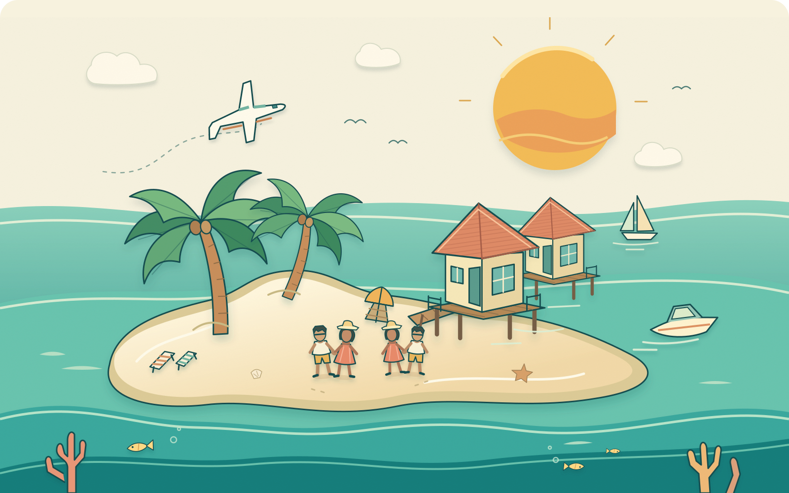

两天海上主线
导览浮潜安排在第2天，日落海钓放第3天。还可体验皮划艇和SUP，不用每天重复同一套玩法。
两对夫妻，五天四晚。
北京与成都出发，在同一片海过假期。
Serenity Plan一价全包，吃喝玩都排进假期。

推荐圣吉利岛：OBLU SELECT Sangeli。我选它，是因为你们是两对夫妻：只拍照容易腻，只追浮潜又不一定人人都爱。这里的屋礁、水上活动、特色餐和成人小岛，正好能排出五天不同的节奏。
北马累环礁 · 距MLE约50分钟快艇 · 一岛连住4晚
酒店官方介绍与Serenity Plan ↗导览浮潜安排在第2天，日落海钓放第3天。还可体验皮划艇和SUP，不用每天重复同一套玩法。
第4天四人一起去水上中心，拖伞两人一组轮流体验，傍晚同船找海豚，回岛四人聚餐。两项均另付费，先询价。
推荐两间基础水屋连住4晚，先不追私家泳池。用餐和指定酒水纳入套餐，海边的时间比搬房间更值。
这里的“五天”指2027年5月1日入住、5月5日离岛，共4晚。建议为回国预留5月6日；如果5月5日必须到家，需要可衔接的当日回国航班，否则应压成3晚。2027航班、假期安排尚待确认。
我推荐订Serenity Plan。
三餐、小食、指定酒水与迷你吧，一起放进酒店总价。
建议08:00集合，国际自助、现做餐台，配咖啡或茶；早餐后再去玩海。
建议13:00吃午餐。主餐厅提供变化的国际与马代风味，下午最热时回房休息。
现行参考16:00–18:00供应当地小食。下午散步时顺路尝尝，出海日按集合时间调整。
当前晚餐参考19:00–22:00，变化的自助和现做菜。海钓、巡航回岛后先确认能赶上营业。
套餐菜单内的精选啤酒、葡萄酒、烈酒和鸡尾酒；也有无酒精特调、软饮、咖啡与茶。当前参考09:00–次日01:00，晚饭后四个人再坐一会儿。
当前参考17:00–19:00。选当天指定鸡尾酒或无酒精特调，也可选指定葡萄酒、啤酒与软饮；不是整份高级酒单任点。
白天泳池边点套餐指定饮品，咖啡茶饮和无酒精选择也安排得上。营业与成人区域规则以现场确认为准。
现行方案含指定饮料与小食，每日补充。入住时核对哪些瓶罐属于套餐、补充频次与额外追加费用。
四人同桌吃泛亚洲风味，浮潜日的一顿好饭。
四人烤海鲜与肉类，吃好午休，傍晚再去海豚巡航。
餐券怎么确认：按2026年7月官方PDF，4–7晚列每人2次特色餐；本行程据此规划。官网促销摘要可能不同，2027请在订单写明两次、可用餐厅与餐次；如实际只含1次，另一顿改主餐厅，避免临时加钱。
哪些先问价：套餐外高级酒水、额外特色餐、房内送餐、浮动早餐等，不默认免费。指定餐饮酒水已纳入酒店预算，不再重复预留一份日常餐费；自费出海上的饮品另核。
最后一天：抵岛后按酒店安排开始餐标；现行离店日11:00套餐消费结束、12:00退房，晚些离岛也不默认含午餐或延迟退房。
以上范围和参考时段核对于2026年10月24日；以Serenity Plan现行方案及2027实际订单、现场公告为准。菜品、酒单与名额可能变化。
第2天浮潜，第3天日落海钓；
第4天继续四人出海，项目和费用在这里看清。
与月圆夜航二选一，这次我选浮潜。四人先听简报，再按海况下水。
四人同船，傍晚轻量钓鱼、看落日。按酒店确认的集合时间出发，能否钓到鱼随缘。
早餐后一起体验，在水上中心许可范围活动；领取规则、时长和海况现场确认。
两人一组体验，TGI当前参考时长15分钟。先问能否四人同船、含税总价和风浪取消规则。
四人一起出海，TGI当前参考时长约1.5小时。野生海豚目击不保证，实际排期由运营方确认。
TGI当前列4/6/8小时、每船最多6人。可询四人包船总价；若升级，替换原日落海钓和部分白天项目，别全部叠加。
先保留套餐日落海钓，适合四人轻松体验；如果你们主要就是想钓大鱼，再单独询Big Game Fishing包船。套餐赠送不等于大物海钓。第4天自费项目与保险杂费总额度为每人¥2,500；报价超出时优先海豚巡航，拖伞改为套餐器材。SPA只作有空再约的备选。
包含情况依据现行Serenity Plan与TGI活动表；所列时长为当前参考，不是2027班次或订单。2027权益、价格、同船安排与出海条件须重新确认。
每天一个重点，不赶场。
下方时间均为建议当地时间，预约以酒店确认为准。
5月初接近季风转换，阵雨和风浪都有可能；若出海取消，第4天优先补浮潜或海钓，再调整自费项目。是否下水以潜店与当天海况为准，不用为了完成行程硬上。
参考2026年7月版Serenity Plan PDF：4–7晚含每人2次特色餐、每位成人1次45分钟SPA、每人1次日落海钓及导览浮潜/月圆夜航二选一。官网促销摘要与PDF可能不同，特色餐次数等须在2027报价单逐项写明；不是已经锁定的订单。
以每人2.5万元为采购上限；
以下分配是预算目标，不是实时房价。
每对夫妻各住一间，4晚不换房。优先Serenity Plan，要求报价含机场往返快艇、约定餐饮酒水和全部强制税费。
我会把预算用在住满4晚、浮潜、海钓与四人出海，再考虑私人泳池。先核实水屋房型、床型与相邻房申请；相邻房不能默认保证。
仍先询同岛4晚，把水屋改成基础沙屋；酒店含餐含船含税的目标降到每间2人4晚 ¥20,000以内。若报价做不到，就调整房型或晚数，不能当作已有此价。
建议先同时拿到两地航班与酒店的可退报价，再决定是否付款。若水屋超出额度，先询同岛沙屋，不把总预算默默加高。
各自飞马累，不必先在国内会合。
先查北京首都直飞；没有合适班期，再比一次中转的完整联程。
先查成都天府直飞；以能衔接上岛、回国日期合适为优先。
航线依据：Maldivian官方目的地页列有北京首都、成都天府和马累，中国直飞航线有官方历史公告。这不代表2027年5月1日两地均有直飞。本页不提供已确认班次或实时票价；需核实2027实际可售往返，并先锁定返程到家日期。
询两间基础水屋连住4晚，要求两人每间、Serenity Plan、机场往返快艇、全部强制税费的总价。先核对往返航班能否兑现5/1入住、5/5离岛，再锁不可退房价。
圣吉利现行4–7晚方案含每人2次特色餐、每位成人1次45分钟SPA；含1次日落海钓及另选1次导览浮潜/月圆夜航。均需预约，2027订单须重新确认。
假设四位均持中国普通护照，30天内短期旅游目前免签。建议护照余期至少6个月；备妥返程票、酒店确认单。按现行规定，抵达前96小时内免费提交IMUGA入境申报。
IMUGA 官方入口 ↗备长袖水母衣、面镜、防晒和防水袋。不会游泳先选岸上或浅水活动；是否适合下海由潜店评估。穿救生衣、结伴并听从指引，不自行进入屋礁；不追海豚、不触碰珊瑚。
研究日期：2026年10月24日。只推荐OBLU SELECT Sangeli；以下日程为我们的建议安排，钟点不是酒店公布的班次。设施与套餐依据现行官方资料，2027年房价、餐标、接送、航班与入境要求须在预订及出发前重核。插画是旅行情境表达，海洋生物目击、天气和预约名额均不保证。